AI & Automation
Designed and built a full content automation system. The pipeline publishes simultaneously to 4 social networks (Instagram, Facebook, TikTok, YouTube), supports scheduled and instant content, and uses Notion as a zero-code content database — non-technical users manage everything without touching any software.
96%
Time saved per session
4h → 10min
Scheduling time reduced
n8nNotion APIInstagram APIFacebook APITikTok APIYouTube APIClaude
n8n Automation Flow
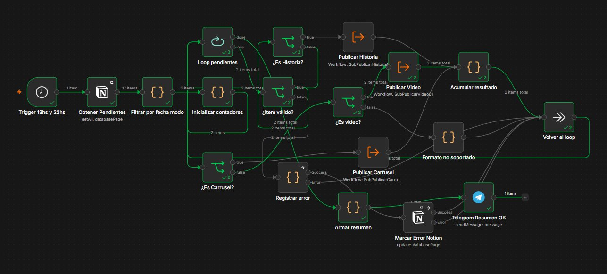
The full automation: reads pending content from Notion, detects format (Story, Video, Reel, Carousel), routes each to its publishing sub-workflow, and reports results back via Telegram and Notion.
Content Calendar — Notion
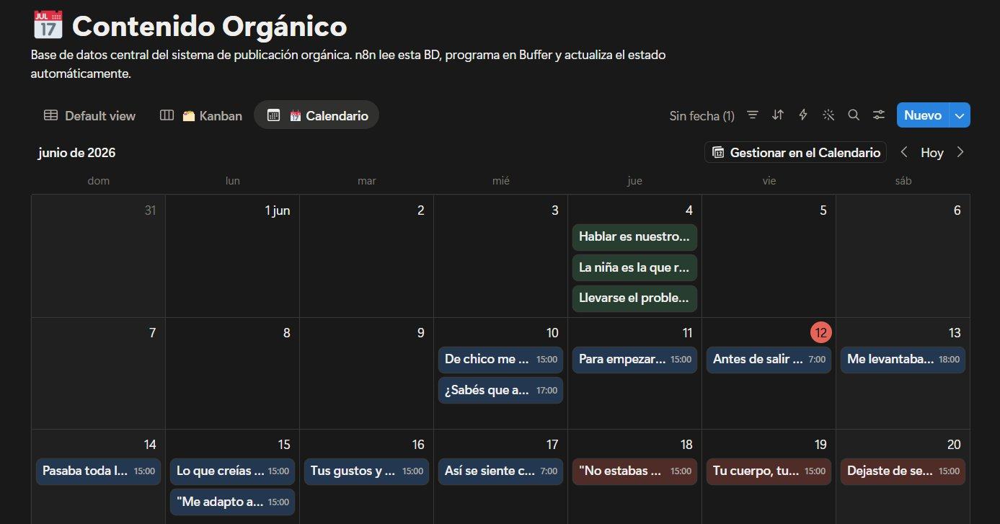
The zero-code interface: content is planned and written directly in Notion as a calendar. n8n reads this database, schedules each post, and updates its status automatically — no other software required.
Automated lead nurturing over WhatsApp Business API. Handles 75+ leads automatically, sends personalized messages at different funnel stages, and rotates sender numbers to avoid platform bans — a critical constraint in high-volume messaging.
75+
Leads handled automatically
0
Manual messages per campaign
n8nWhatsApp Business APIClaudeDocker
n8n Automation Flow
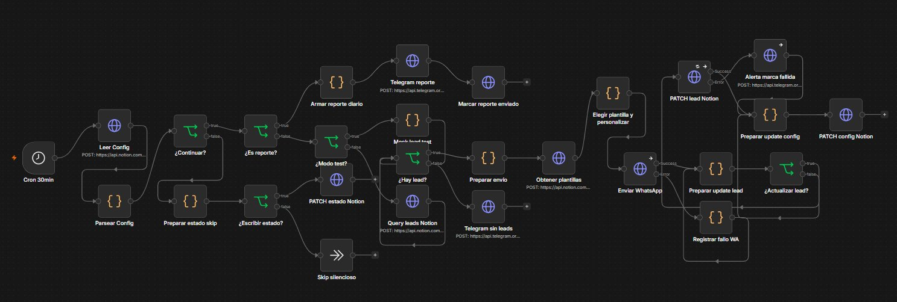
Runs on a schedule: reads lead status from Notion, checks for active campaigns and test mode, builds and sends personalized WhatsApp messages or daily reports via Telegram, and updates lead status back in Notion.
Native Android application using WebView architecture with real native features: push notifications, persistent login session, and navigation enhancements. Distributed directly to trusted users via APK for early-access distribution.
AndroidWebViewPush NotificationsGoogle AntigravityClaude
Process & Standards
Internal web application for A3 continuous improvement process management at INVAP — Argentina's national aerospace company. Led the full product cycle: stakeholder interviews, requirements, architecture, and development. Built using Claude as an AI development agent — coordinating sub-agents per feature and managing complexity at scale.
AI-first
Claude as dev agent
ReactNode.jsPostgreSQLDockerGitClaudeGoogle Antigravity
No screenshots for confidentiality reasons — these diagrams show architecture, functionality, and user flow without exposing internal data.
System Architecture
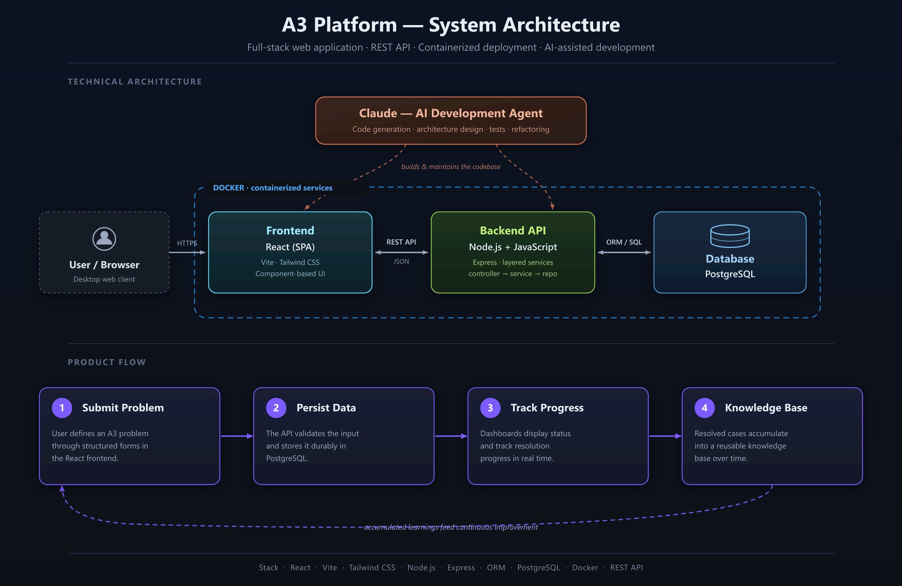
How the app is built: a React frontend and Node.js API run in Docker containers, backed by PostgreSQL. Claude acted as the AI development agent throughout, generating and maintaining the codebase.
Functional Modules
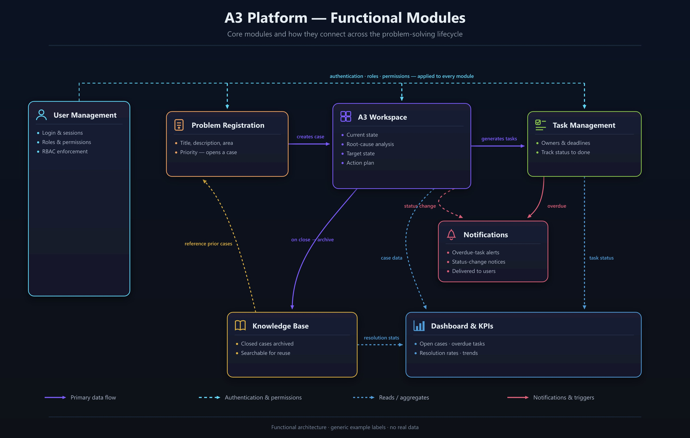
The core modules and how they connect: from problem registration through the A3 workspace, task management, dashboards, notifications, and a knowledge base that accumulates resolved cases for future reuse.
Problem-Solving Process Flow
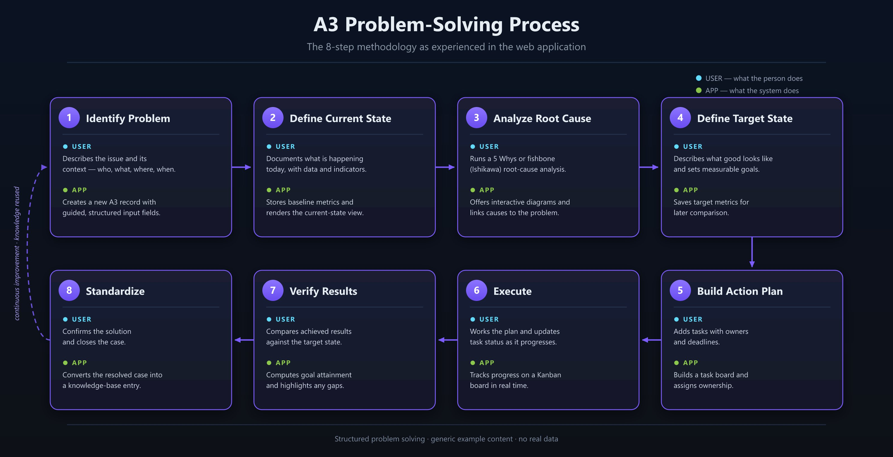
The 8-step A3 methodology as experienced inside the app — each step shows what the user does and how the system responds, from identifying the problem to standardizing the solution into the knowledge base.
Web platform that digitizes the full continuous-improvement (5S) cycle for an industrial site — audits, findings, visual standards, improvement opportunities, and management dashboards — replacing scattered spreadsheets and paper checklists with one system with full traceability. Originally built in collaboration with other team members; I now lead development. Defined the domain model and a capability map (7 epics / 42 capabilities) with requirement → code → test traceability, and ran product-decision sessions with the internal client area.
95%
Test coverage on scoring/permissions
Spec-driven
AI-assisted dev workflow
React 18TypeScriptNode.jsFastifyMySQLDockerGitLab CIClaude
No screenshots for confidentiality reasons — these diagrams show architecture and functional flow without exposing internal data.
System Architecture
Layered architecture: a React/TypeScript SPA talks to a versioned REST API, with a pure domain layer (5S scoring, RBAC, digital sign-off, state machines) isolated from framework and I/O concerns, backed by MySQL and S3-compatible object storage.
Functional Flow
The audit-to-improvement cycle: an operator completes a checklist-based audit with photo evidence on mobile, a supervisor signs off, and any finding below threshold auto-generates a corrective action feeding into a shared Kanban board alongside improvement proposals.
Internal platform that replaces a management area's scattered departmental spreadsheets — org charts, engineering suppliers, purchase orders — with a single source of truth with full audit trail and access control. Led the project end-to-end: ran a quantitative analysis of the 8 existing spreadsheets before writing a single requirement, which surfaced real problems (12% duplicate supplier records, 46% of the corporate supplier catalog invisible to any department, 4 incompatible performance-rating scales) that shaped the data model. One of the six domain modules is a human-capabilities inventory — the skills and experience of each person — so project teams can be assembled from what people can actually do, rather than from who happens to be free. Wrote the full spec (epics → capabilities → user stories), led sprints and client demos, and did the majority of full-stack development in a two-person team.
12
Capabilities specified & approved
107
Granular authorization permissions
3 layers
Defense-in-depth authorization
React 18TypeScriptNestJSPostgreSQL (RLS)PrismaRedisDockerGitLab CIClaude
No screenshots for confidentiality reasons — org names, departments, suppliers, and people are all generic placeholders in these diagrams.
System Architecture
Modular monolith (light DDD) with 6 isolated domain modules behind a granular authorization layer, backed by PostgreSQL with Row Level Security, Redis for caching/queues, and read-only incremental imports from corporate systems — with a change feed and authorization scope already in place to support a future semantic-search layer.
Functional Flow
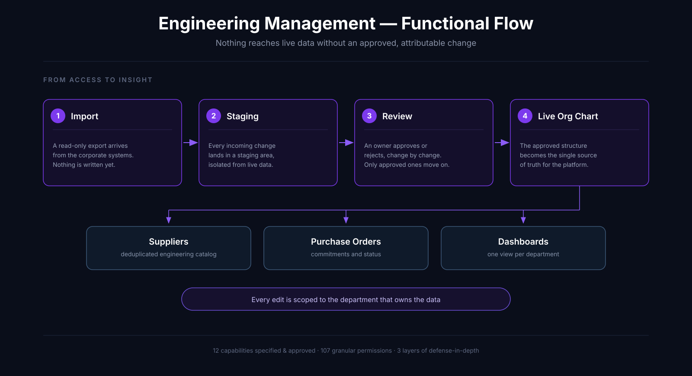
From access to insight: incoming data from corporate exports is staged and approved change-by-change before it touches the live org chart, which then drives supplier management, purchase-order tracking, and department dashboards — with every edit scoped to the department that owns the data.
Engineering Platform
A starter template (“golden path”) for new internal applications. It is a monorepo whose skeleton already runs end to end on day one — authentication with lockout, RBAC, an append-only audit trail, notifications, admin screens, Docker and CI — so a new project never rebuilds that groundwork and starts directly on its own domain. Authored the baseline skeleton and, alongside it, the development method: a two-tier spec-driven approach where the specification (not the code) is the source of truth, giving requirement → code → test traceability. Ships 16 AI skills and 11 specialized agents that encode the team's standards so the method survives contact with a real project. The effect is measurable on the thing that matters: when I joined the area it took me about a week to start contributing to a project — the first developer onboarded after the template shipped was working on an app in 3 days, on a framework that was already established and shared.
1 week → 3 days
Onboarding to first contribution
Day one
Skeleton runs end-to-end
27
AI skills & agents included
pnpm monorepoTypeScriptReact 18ViteExpressPrismaPostgreSQLMinIOZodDockerGitLab CIPlaywrightClaude
This template ships no domain and no client data — the diagrams below show the skeleton it provides and the method used to build on top of it.
System Architecture
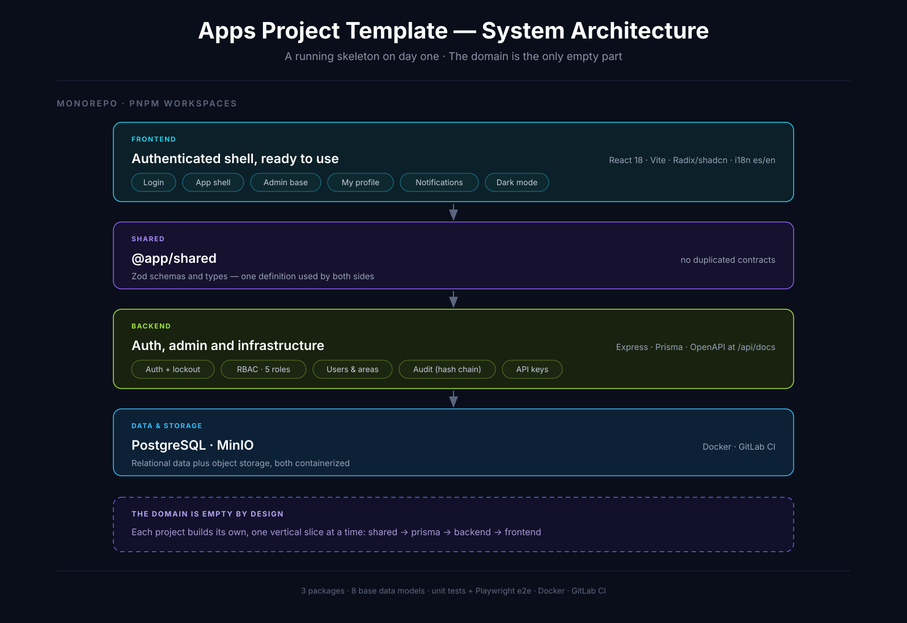
The monorepo: a React/Vite frontend and an Express/Prisma backend sharing one set of Zod schemas, over PostgreSQL and MinIO. Everything shown is already working — auth with lockout, RBAC across 5 roles, an append-only audit trail with chained hashes, notifications and API keys. The domain is deliberately the only empty part.
Development Method
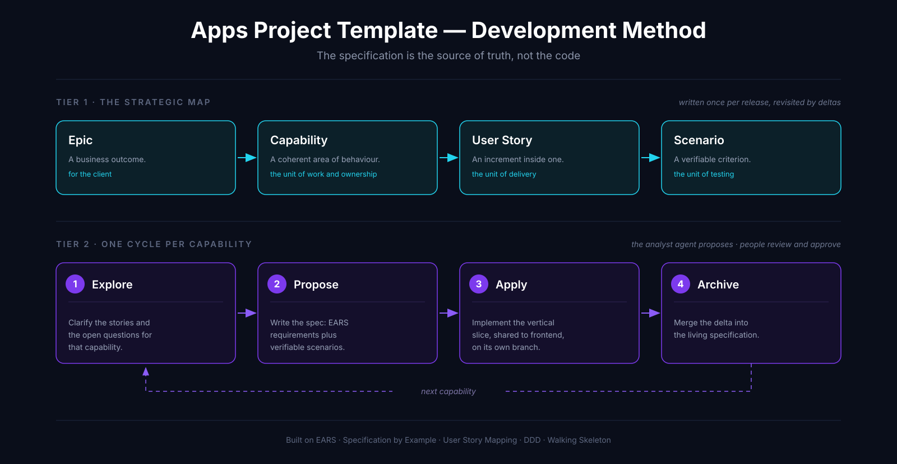
The two-tier method: a strategic map first decomposes the product into capabilities (Epic → Capability → User Story → Scenario) to prove nothing is orphaned, and each capability then runs its own explore → propose → apply → archive cycle. Built on EARS, Specification by Example, User Story Mapping and DDD rather than invented from scratch.